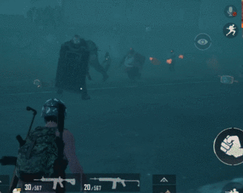

暗夜危机回归了，想要活下去，就要知道以下几点:
1.单层房顶 玩暗夜危及模式的玩家大部分都知道,要想晚上安全,就先要找建筑躲避。地图里虽然建筑很多,很多人会考虑多层建筑,但是丧尸也会闯进建筑里来,也会爬楼梯上高层。这时候那些单层没有上楼顶通道的建筑,
如果借助一些技巧和道具...
2.集装箱 在城市资源点及周边地区,有零星的集装箱分布。跳上去之后,一些普攻近距离的丧尸就伤害不到你了。有些集装箱如果直接跳不上去,可以借助周围物体攀爬上去,比如农场附近就有一个可以从矮墙上去。
但是有毒液喷射的丧尸还是可以...
3.野区零散高处 在乡村资源点,经常会遇到有一些高塔。可以躲进去暂时躲避丧尸。丧尸爬上来的过程中会减慢速度,就可以趁机消灭他们。此外在废墟资源点,有很多石柱墙体都可以尝试爬上去暂时躲避丧尸围攻。
4.载具 暗夜危机里为了游戏可玩性,载具变得比较稀有,但是运气好还是可以找到的。假如遇到载具,除了可以高速行驶甩丧尸和跑圈,还可以利用它们当堵路掩体、借助它爬单层建筑屋顶,没油了还可以引爆载具当炸弹使。